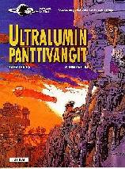
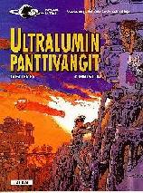

![[Forside]](pics/16_cover.jpg)
Otages de l'Ultralum
Linda og Valentin er nå stinkende rike etter at de muliggjorde revolusjon på Rubanis i forrige album. Tiden fordriver de på luksuscruise i verdensrommet. Men Valentin får mer spenning ganske snart. Kalifen av Iksaladam, hans harem og hans lille sønn drar nemlig Linda med seg i sine problemer. For å finne Linda igjen må Valentin få hjelp fra en som har liten grunn til å stole på mennesker. Kistna ble nemlig drept(!) av Jal i T13
Mange gamle kjente dukker opp i dette albummet som kanskje ikke helt levde opp til forventningene :(
Dette kom på dansk februar 97. Se hva Carlsen skriver om det. Og hva en tysk kritiker skriver, eller kanskje hva belgierne i BDparadisio mener?
![[Cover Pic]](pics/tysk_16.jpg) 

![[Cover Pic]](pics/otages_de_l_ultralum.jpg)